Week 8: Intro to ggplot
| Compartmentalized | Documented | Extendible | Reproducible | Robust |
This week I will give an introduction to plotting with ggplot. This is oriented to those with little or no experience using ggplot or those who have tried it and gotten frustrated. If you already use ggplot, you won’t find this session very interesting.
You will need to install the ggplot2 package for this session.
library(ggplot2)## Warning: package 'ggplot2' was built under R version 3.6.3Basic xy plot
Workflow
Let’s say you wanted to make a simple xy plot with plot(). Here’s your workflow.
- Decide on \(x\) or use the default (1 to the number of data points).
- Decide on \(y\).
- Plot with
plot(x,y)
t <- 1:10
val <- rnorm(10)
plot(t, val, type="b")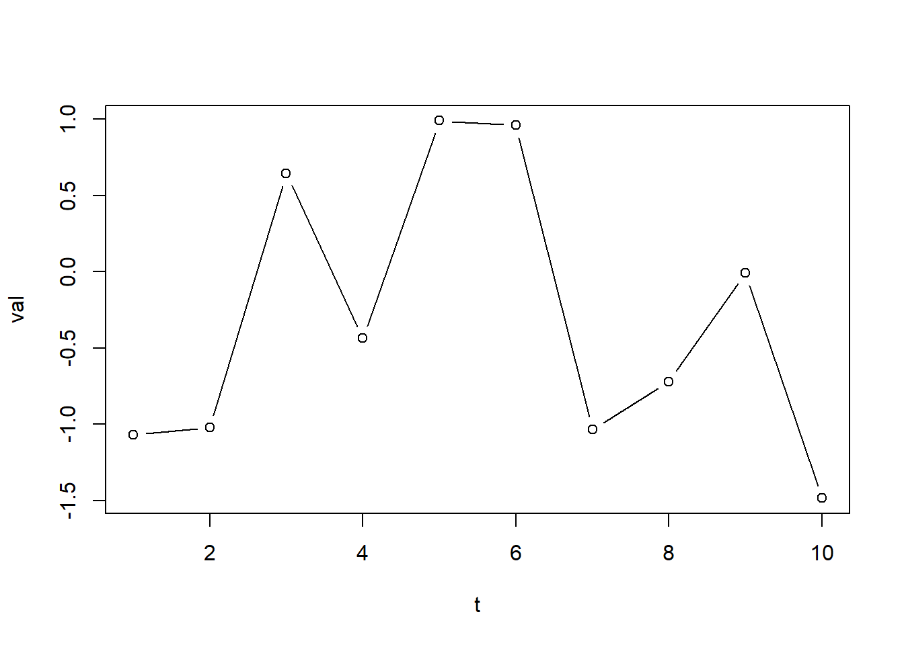
Here’s your ggplot() workflow.
- Decide on \(x\) or use the default (1 to the number of data points).
- Decide on \(y\).
- Make a data frame with \(x\) and \(y\).
- Create the plot object with a call to
ggplot()to tell it the data frame and then what the \(x\) and \(y\) to use. The latter is withaes()(aesthestics). - Add points or lines to the plot with
geom_line()orgeom_point().
df <- data.frame(t=t, val=val)
p1 <- ggplot(df, aes(x=t, y=val)) #set up data and x and y
p2 <- p1 + geom_point() # Tell it what to do with that (add a line)
p2 # plot it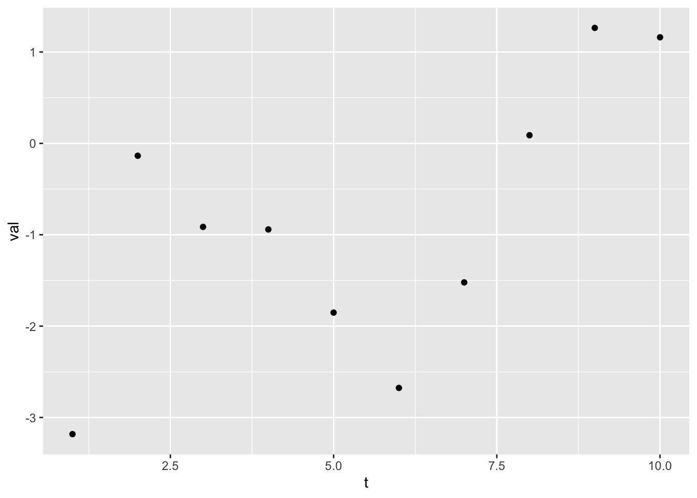
Typically you’d just write the call like so
ggplot(df, aes(x=t, y=val)) + geom_point()But I assigned the calls to objects p1 and p2 so you can see that both are ggplot objects.
class(p1)## [1] "gg" "ggplot"class(p2)## [1] "gg" "ggplot"That feature is going to be super helpful because it means you can easily add elements to a ggplot without worrying about \(y\) axis limits or figure sizing.
p2 + geom_line()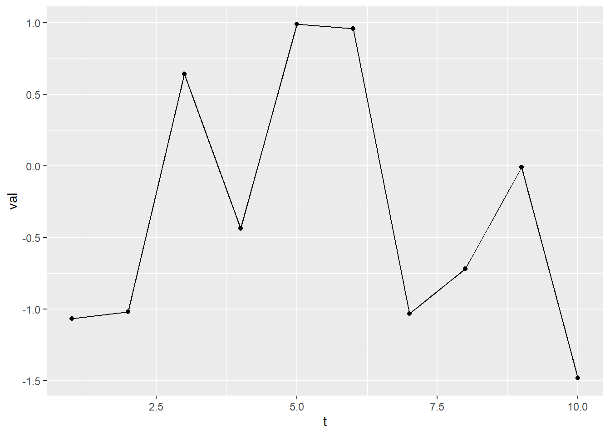
Modifying your points and lines
With plot(), you alter the points and lines with arguments passed to plot().
pch(point type),lty(linetype),type(“l”, “b”, “p”),lwd(line width),cex(point size)
plot(t, val, type="b", lwd=2, lty=2,
pch=21, col="red", cex=4, bg="blue")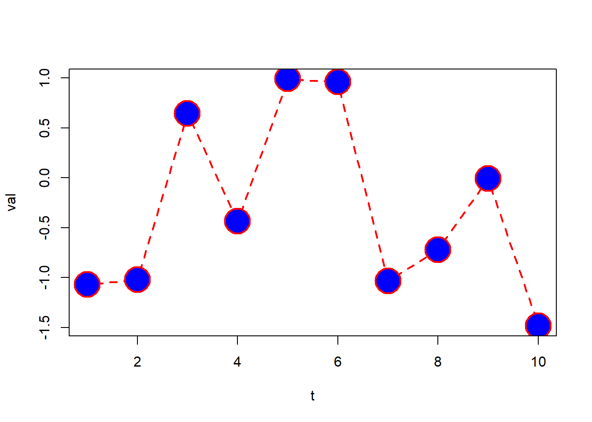
With ggplot(), the approach is quite different and the names are mostly totally different. A cheatsheet of things you commonly use will be helpful when start (I still use one).
There are two different workflows that you need to decide on.
- Dynamic colors etc: Let
ggplot()pick your colors, points, line widths etc. - Fixed colors etc: Manually choose your colors, points, line widths etc, aka use a fixed value.
Gravitating to option 1 will make your life with ggplot() easier, but let’s start with option 2.
 Fixed lines, points attributes go outside of
Fixed lines, points attributes go outside of aes() in a geom_...() call. Dynamic attributes go inside of aes().
Look at ?geom_point to see the attributes that you can pass in.
ggplot(df, aes(x=t, y=val)) + geom_point(col="black")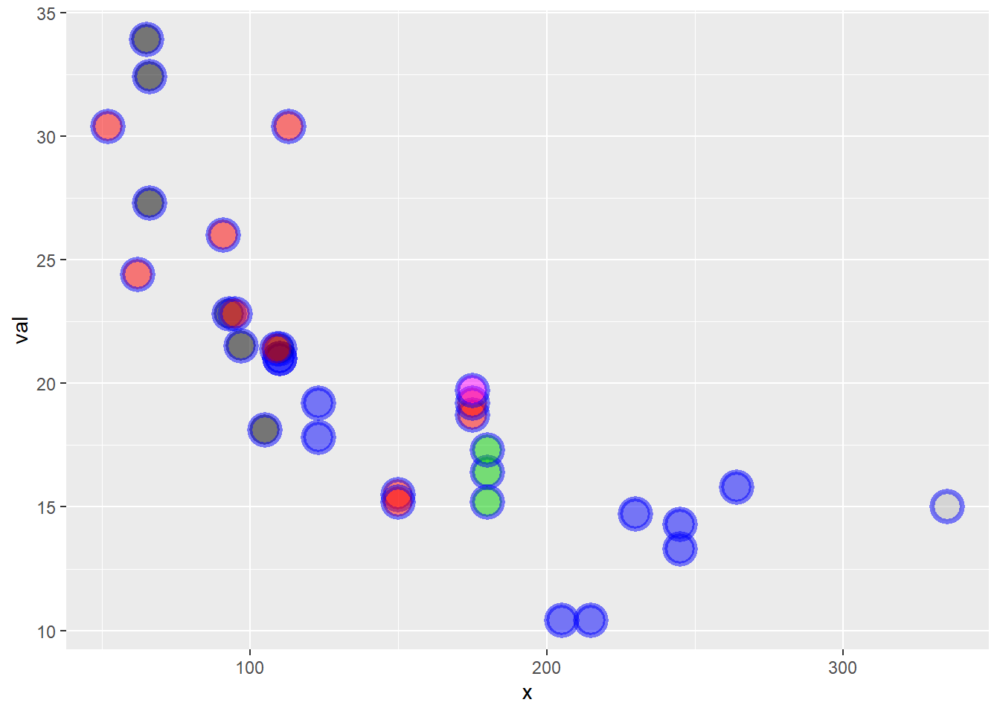
The length of the fixed attribute must be 1 or the length of the data.
ggplot(df, aes(x=t, y=val)) +
geom_point(shape=21, fill="blue", col=rep(1:2,5), size=6, alpha=.5, stroke=2)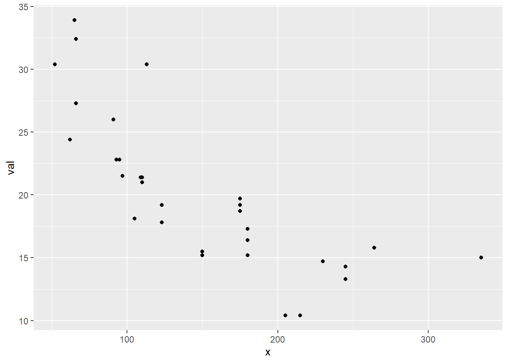
Ways to set attributes that won’t work as you think:
Putting color outside of aes() in ggplot() does nothing. ggplot() sets up the data to use, but information outside aes() doesn’t flow to the plotting functions like geom_point().
ggplot(df, aes(x=t, y=val), col="blue") + geom_point()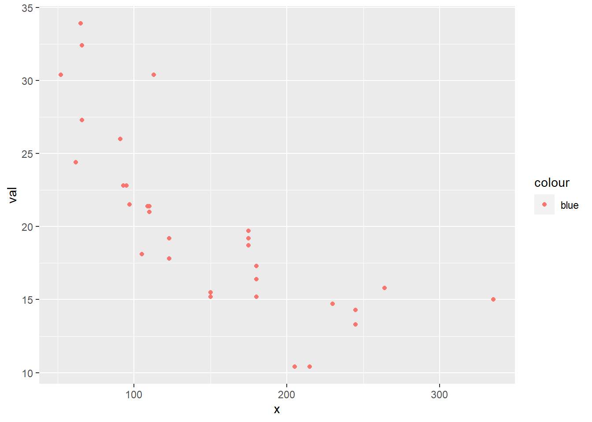
Putting color inside of aes() in ggplot() has a non-intuitive effect. Plot attributes, like color, in aes() are converted to factors and the colors (etc) will be choosen dynamically. The name “blue” is not a color is the a factor and ggplot() gives the first factor the color red in this case. Information in aes() will flow to the rest of the plot unless you tell the geom_point() otherwise).
ggplot(df, aes(x=t, y=val, color="blue")) + geom_point()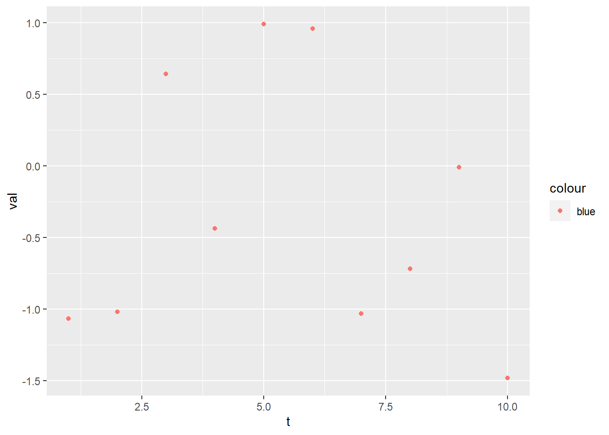
How do we tell geom_point() not to use the color value in aes() in ggplot()? Tell it to use a fixed value by putting col="blue" outside of an aes() call (in geom_poin()).
ggplot(df, aes(x=t, y=val, col="blue")) + geom_point(col="blue")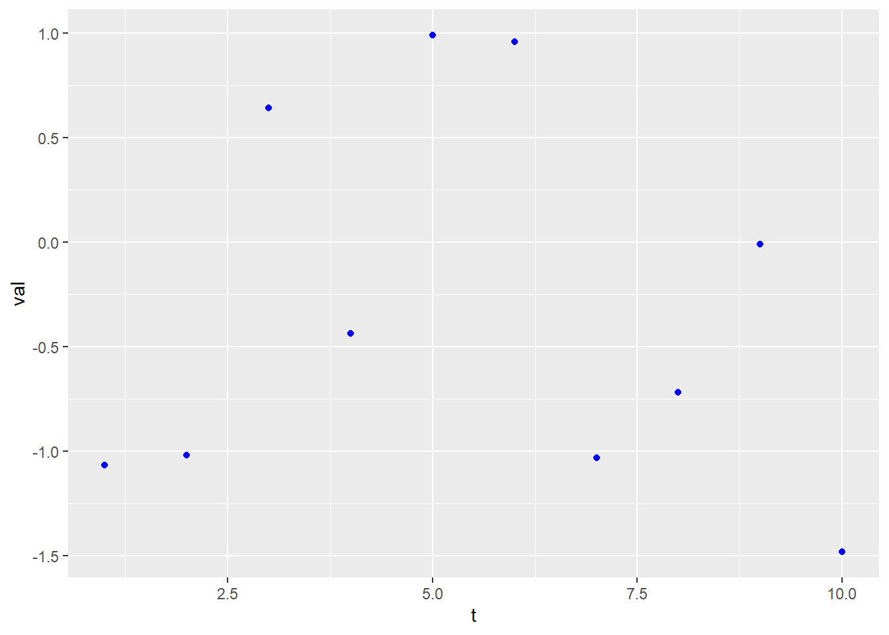
What happens if we put the color in aes() in geom_point()?
ggplot(df, aes(x=t, y=val)) + geom_point(aes(color="blue"))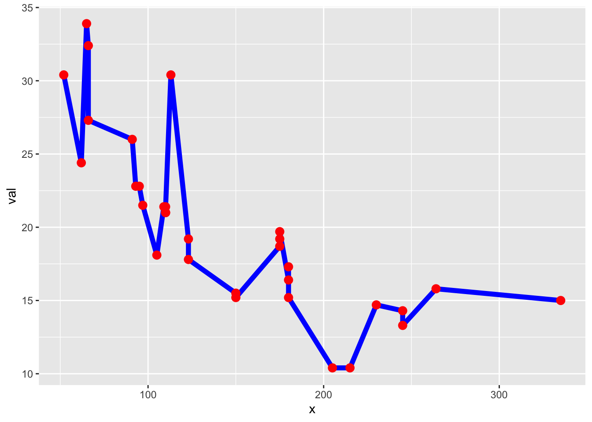
Let’s make a plot with big red points and a thick blue line.
p1 <- ggplot(df, aes(x=t, y=val)) +
geom_line(col="blue", size=2) +
geom_point(col="red", size=3)
p1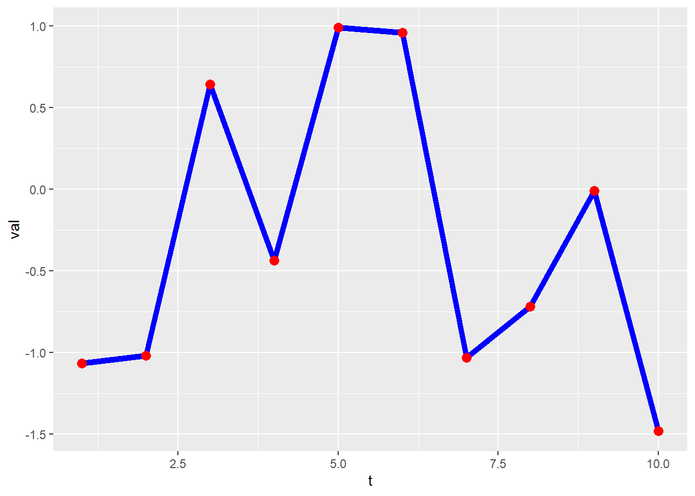
Let’s add a column plot to that. I pass in alpha to add some transparency to the columns so they don’t wipe out the line.
p1 + geom_col(alpha=0.5)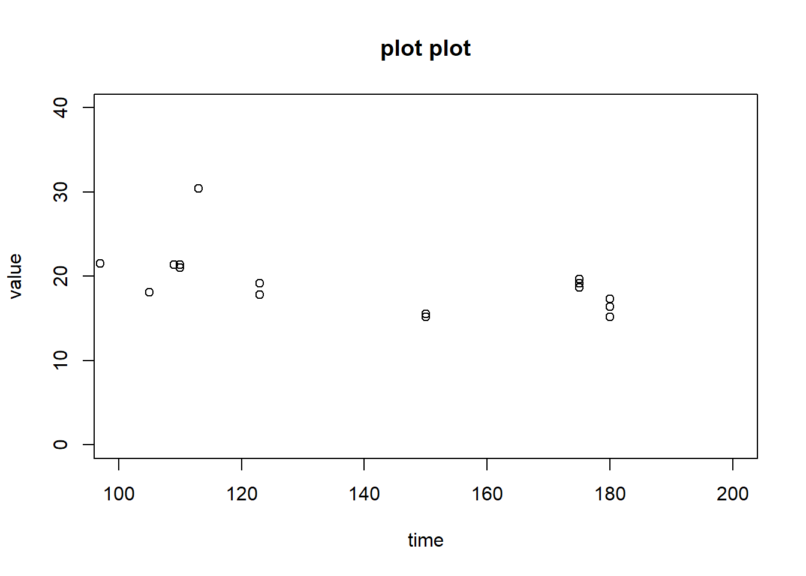
Modifying your labels and limits
With plot(), you alter the labels and limits with arguments passed to plot().
xlabandylab(labels),mail(title),ylimandxlim(limits)
plot(t, val, type="p", xlab="time", ylab="value",
xlim=c(-10,10), ylim=c(-5,5), main="plot plot")
With ggplot, it’s pretty similar but you use functions.
ggplot(df, aes(x=t, y=val)) +
geom_point() +
xlab("time") + ylab("value") +
ggtitle("ggplot plot") +
xlim(c(-10,10)) + ylim(c(-5,5))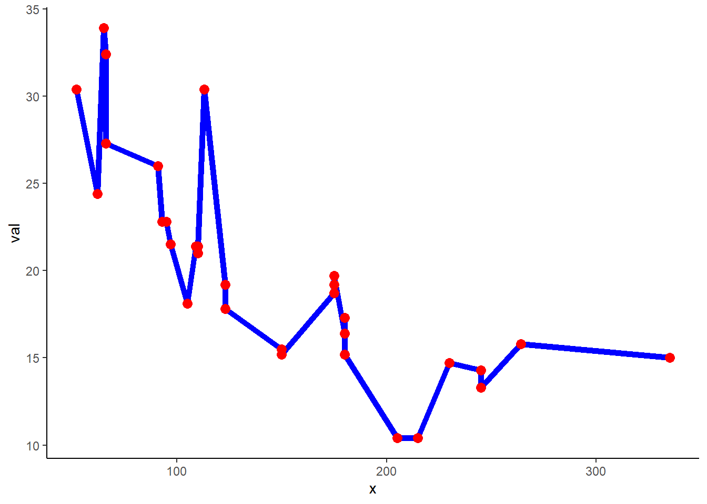
Changing the whole look of your plot
ggplot uses themes to set the look of your plot and you can change the whole look by setting a different theme. You can also just tweak one element of the plot’s existing theme. Note because we fixed the line and point colors, we override some theme elements (eg, line colors). See ?theme_bw to see all the themes. See ?theme to learn how to change one element of your plot design.
p1 + theme_classic()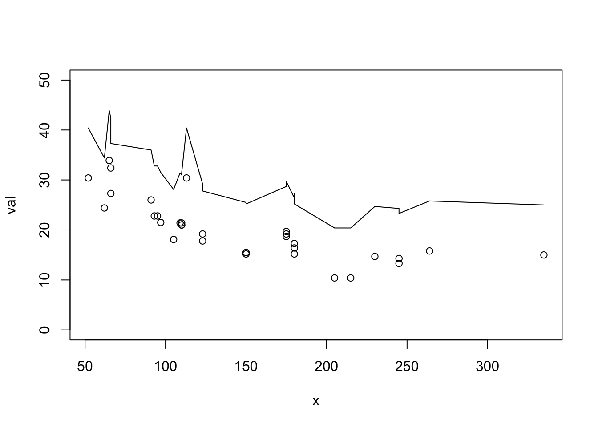
Adding data to your plot
Let’s say you want to plot 2 lines.
Workflow similar to plot()
In plot() your workflow is
- Define \(x1\) and \(x2\) (if different)
- Define \(y1\) and \(y2\)
- Plot \(y1\) with limits adjusted for the data we are adding.
- Add \(y2\) to the plot.
val2 <- val+1
plot(t, val, ylim=c(-3,3))
lines(t, val2)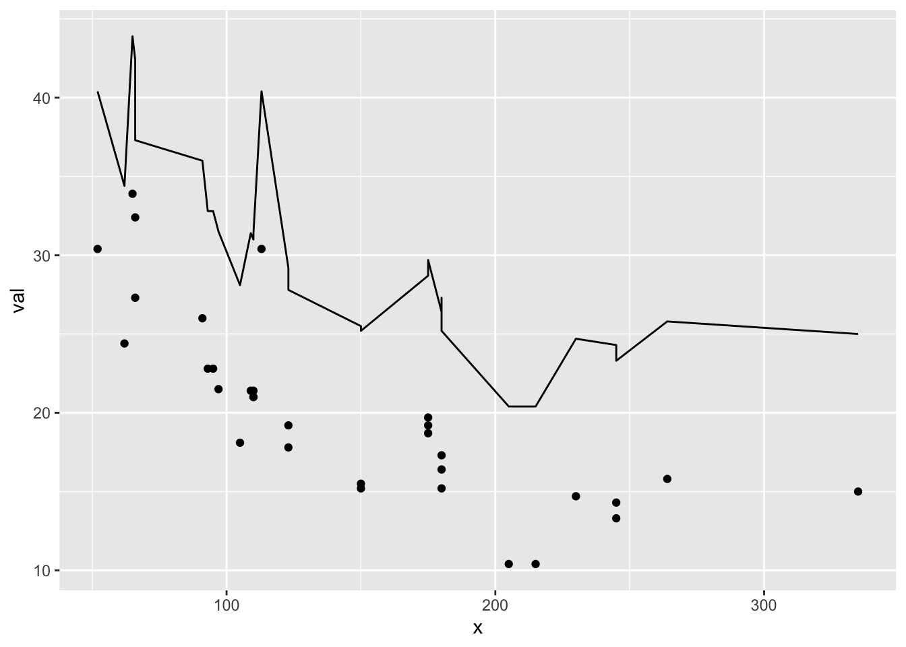
In ggplot() you have two possible workflows. First one could be like the plot() workflow. This will cause you problems if you later want to arrange these data into separate plots, but lets go ahead and do this. Sometimes this is the easiest way to get done what you need to do.
- Define \(x1\) and \(x2\) (if different)
- Define \(y1\) and \(y2\)
- Make data frames \(df\) and \(df2\) for both.
- Set up the plot with
ggplot()and \(df\) - Add points with
geom_point() - Add \(df2\) using
geom_line()with \(df2\) passed in andaes()call.
How aes() is working. aes() information is flowing rightward. Everything to the right will inherit the data frame and aes() info unless you specifiy new data or new aes().
df2 <- data.frame(t=t+2, val2=val+1)
ggplot(data=df, aes(x=t, y=val)) +
geom_point() +
geom_line(data=df2, aes(x=t, y=val2))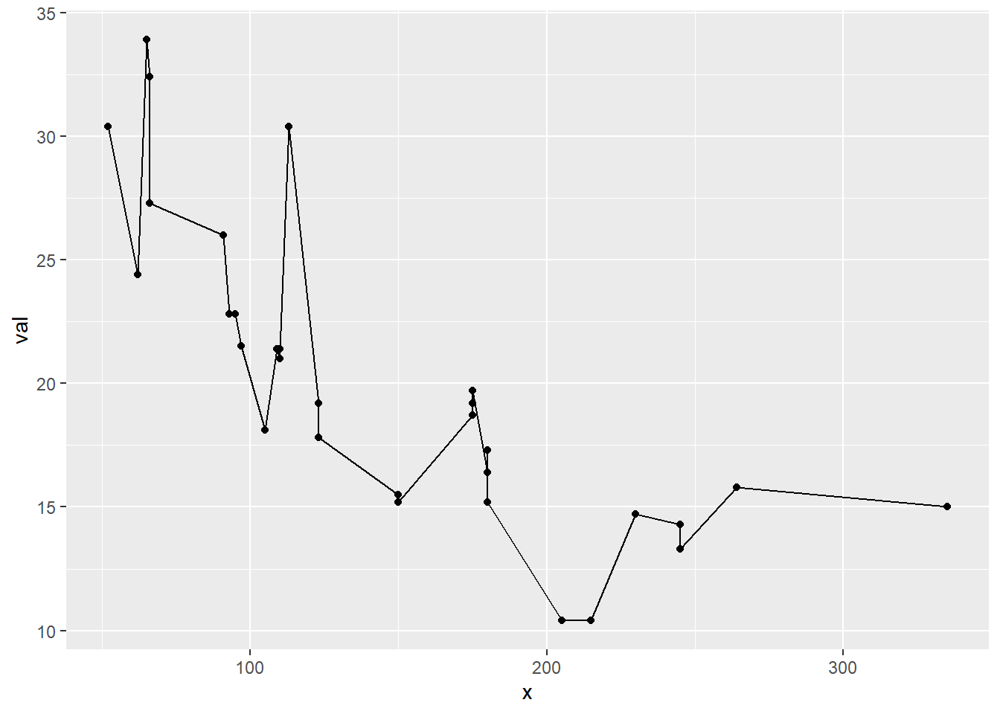
This inheriting feature of aes() is great but can get you mixed up when you are layering data like this. Here I made a typo and used val instead of val2 for y in the line. ggplot helped me out by using the data from df instead.
ggplot(data=df, aes(x=t, y=val)) +
geom_point() +
geom_line(data=df2, aes(x=t, y=val))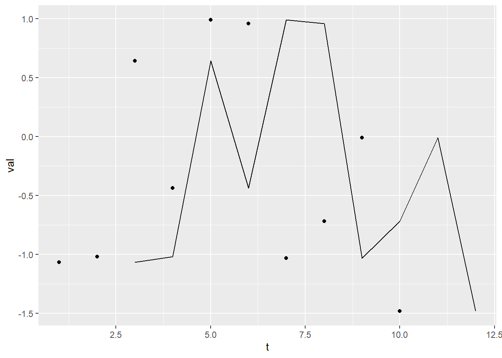
Sometimes it is clearer if you keep the data and aes() with the points and lines. Note data and aes() will still inherit rightward.
ggplot() +
geom_point(data=df, aes(x=t, y=val)) +
geom_line(data=df2, aes(x=t, y=val2))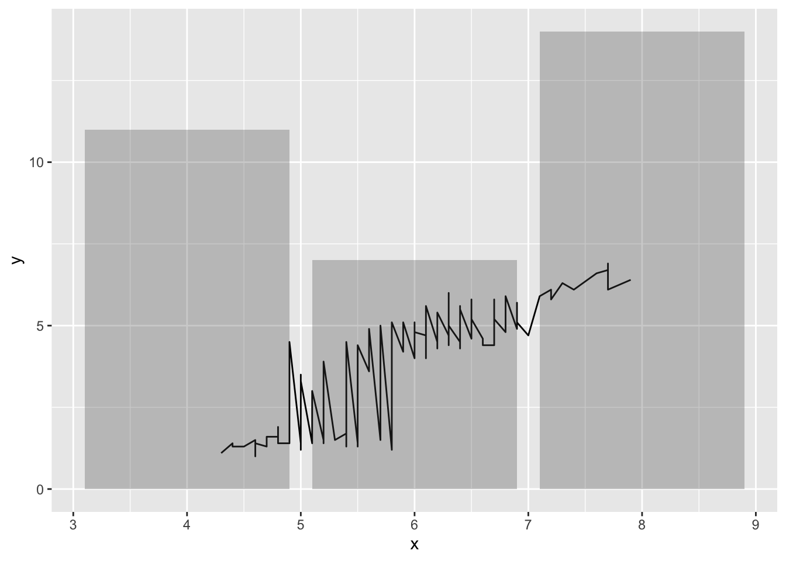
Adding and modifying the legend
ggplot makes it rather hard to modify your legend if you create a plot this way. Creating a manual legend can be quite hacky. First thing to know is that the color, linestyle, and/or shape must be in aes() to appear in the legend. If it’s not there you can’t control it in the legend.
ggplot() +
geom_point(data=df, aes(x=t, y=val, col="df", linetype="df")) +
geom_line(data=df2, aes(x=t, y=val2, col="df2", linetype="df2")) +
scale_color_manual("name", values=c("blue", "black")) +
scale_linetype_manual("name",values=c(0,1))## Warning: Ignoring unknown aesthetics: linetype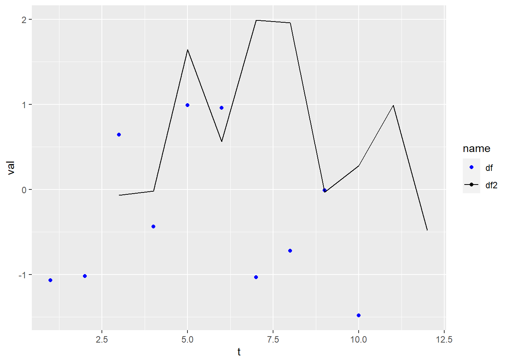
Better ggplot workflow
This is how ggplot() is intended to be used
- Make data frames with \(df\) and \(df2\) data and a “name” column.
- Set up the plot with
ggplot() - Make points or line different using the “name” column
df1 <- data.frame(t=t, val=val, name="df1")
df2 <- data.frame(t=t+5, val=val+1, name="df2")
df <- rbind(df1, df2)
ggplot(df, aes(x=t, y=val, col=name, shape=name)) +
geom_line() +
geom_point()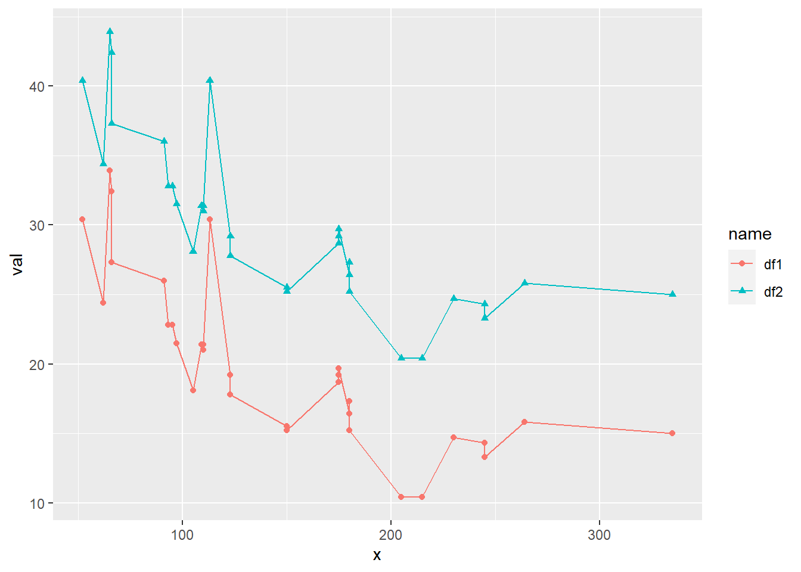
Things to remember
- If the color, shape, linetype is not in an
aes()it won’t appear in the legend. aes()info inggplot()flows to the other elements. Put theaes()info in the individualgeom_...()calls if you don’t want that.- Want to mix points and lines? You need to use
scale_..._manual()to manually turn-off points of lines for some of the data. - You can always force colors, shapes, linetypes by passing in color, shape, size etc outside of
aes()but it won’t appear in the legend.
Example, points are all black since the aes(col=name) only appears in the geom_line() call.
ggplot(df, aes(x=t, y=val)) +
geom_line(aes(col=name)) +
geom_point(aes(shape=name))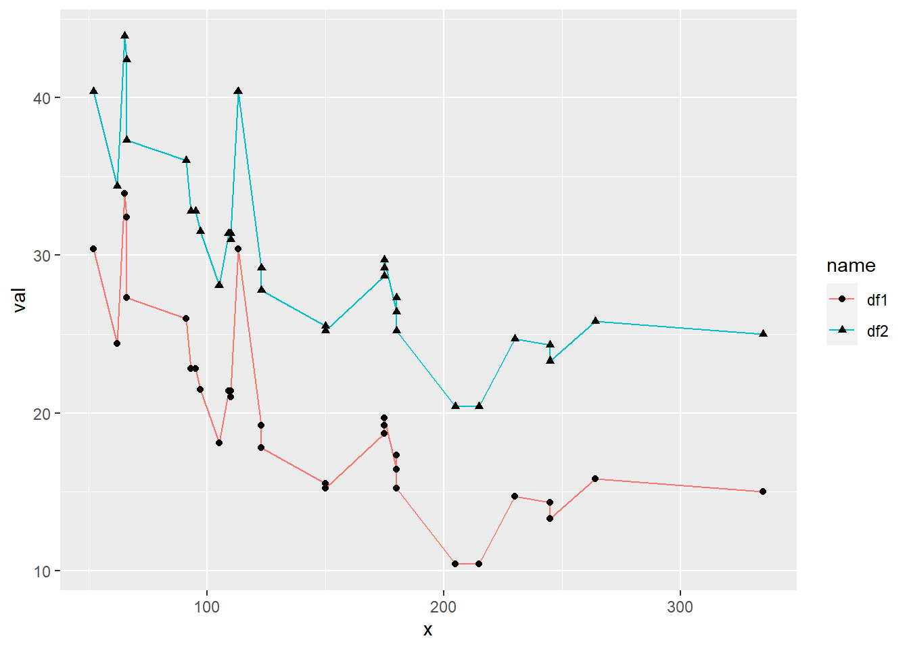
Modifying the legend
You can control all aspects of the legend. Read up on it here.
Making some data points and other lines will require scale_...() and gets hacky.
ggplot(df, aes(x=t, y=val)) +
geom_line(aes(col=name, linetype=name)) +
geom_point(aes(shape=name)) +
scale_color_manual("name", values=c("blue", "black")) +
scale_shape_manual("name",values=c(NA,1)) +
scale_linetype_manual("name",values=c(1,0))## Warning: Removed 10 rows containing missing values (geom_point).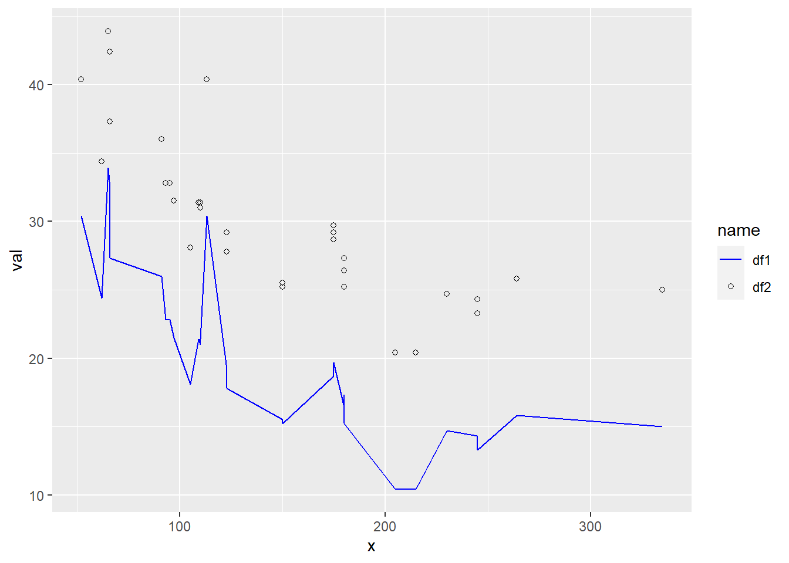
Ack all those NA warnings!
df <- data.frame(x=1:10, y=c(1,NA,NA,4:10), name=rep(c("a","b"),5))
ggplot(df, aes(x=x, y=y, col=name)) +
geom_point()## Warning: Removed 2 rows containing missing values (geom_point).
Get rid of them using na.rm=TRUE.
ggplot(df, aes(x=x, y=y, col=name)) +
geom_point(na.rm=TRUE)